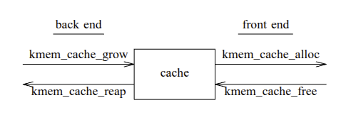
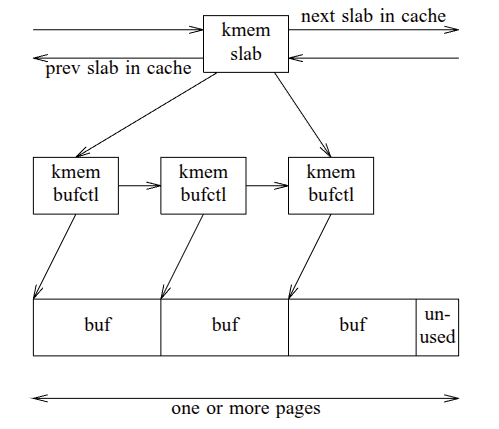
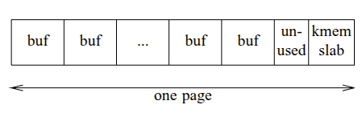

[USTC'94] The Slab Allocator: An Object-Caching Kernel Memory Allocator 论文阅读
本文发表于 USENIX Summer 1994 Technical Conference, 属于 USENIX ATC 的前身.
Slab 分配器最早是有 Jeff Bonwick 在 SunOS 5.4 内核中引入的新内存分配器.
#1. 引言
对象分配和释放是内核中最常见的操作之一. 因此一个快速的内存分配器至关重要. 然而, 很多情况下, 对对象进行初始化和销毁的开销超过了对其进行内存分配和释放的开销. 因此, 通过缓存常用对象, 使其基本结构在两次使用之间得以保留, 可以获得更大的性能提升.
#2. 对象缓存
对象缓存是一种处理频繁分配和释放对象的技术. 其核心思想是在对象使用之间保留其初始状态 (即构造之后的状态) 的不变部分, 从而避免每次使用对象时都进行销毁和重新创建.
例如, 包含 mutex 的对象只需在首次分配时调用一次 mutex_init() 即可. 之后可以多次 free 和重新 alloc, 而无需每次都重新调用 mutex_destroy() 和 mutex_init(). 对象的嵌入式锁, 条件变量, 引用计数, 其他对象的列表 以及 只读数据 通常都属于构造状态.
对象缓存的设计很直白:
分配对象: if (缓存中有对象) 直接获取 (无需构造过程) else { 分配内存; 构造对象; }
释放对象: 将其返回缓存 (无需销毁过程)
从缓存中回收内存: 从缓存中取出一些对象; 销毁这些对象; 释放底下的内存
考虑一个例子:
1 | struct foo { |
#2.1. 中心化对象缓存的必要性
如果在每个子系统都实现一套对象缓存, 会有以下缺点:
- 对象缓存需要保留内存, 而系统的其他部分则需要回收这些内存, 两者之间存在着天然的矛盾. 私有管理的缓存无法有效地处理这种矛盾. 它们对系统的整体内存需求了解有限, 彼此之间也缺乏了解. 同样, 系统的其他部分也不知道这些缓存的存在, 因此无法从中"提取"内存.
- 由于私有缓存绕过了中央分配器, 它们也绕过了分配器可能具备的任何审计机制和调试功能. 这使得操作系统更难监控和调试.
- 重复代码会导致内核代码量增加和维护成本上升.
因此, 对象缓存需要分配器与其客户端之间比标准 kmem_alloc(9F)/kmem_free(9F) 接口程度更高的协作性.
#2.2. 对象缓存接口
基于两点观察:
- 对象的描述信息 (名称、大小、对齐方式、构造函数和析构函数) 应该放在客户端, 而不是中心化的分配器中. 分配器感知块大小语义价值不大.
- 内存管理策略应该由中心化的分配器负责, 而不是客户端. 客户端只需要快速分配和释放内存, 而不应该关心如何高效管理底层内存.
由 1 可知, 对象缓存的创建必须由客户端驱动, 并且必须包含对象的完整规范:
1 | struct kmem_cache *kmem_cache_create( |
由 2 可知, 客户端只需要两个简单接口来分配释放对象:
1 | void *kmem_cache_alloc( |
一个例子:
1 | void |
#3. Slab 分配器实现
这一章介绍 SunOS 5.4 内核内存分配器 – Slab Allocator 的设计. Slab Allocator 得名于其主要数据结构 - “Slab”.
#3.1. 缓存
每个缓存都有一个前端和后端, 两者设计上尽量解耦:

前端 是分配器的公共接口. 它负责在缓存中移动对象, 并在需要更多对象时调用后端.
后端 管理实际内存通过缓存的流动. Influx 例程 (kmem_cache_grow()) 从虚拟机系统获取内存, 创建对象, 并将这些对象送入缓存. 当虚拟机系统需要回收部分内存时 (例如, 在分页开始时), 会调用流出例程 (kmem_cache_reap()). 请注意, 所有后端活动都完全由内存压力触发. 当缓存需要更多对象时, 内存流入; 当系统其他部分需要更多页面时, 内存流出; 没有任意的限制或水位线. 滞后控制由 working-set 算法提供, 详见 3.4 节.
Slab 分配器并非一个单一的整体, 而是由多个独立缓存组成的松散联盟. 这些缓存之间没有共享状态, 因此分配器可以采用逐缓存锁定, 而无需使用全局锁来保护整个区域 (内核堆). 逐缓存锁定允许同时访问任意数量的不同缓存, 从而提高了可扩展性.
每个缓存都维护着自己的统计数据 – 总分配量、已分配和空闲缓冲区数量等. 这些按缓存划分的统计信息有助于深入了解系统的整体行为. 它们可以指示系统中哪些部分消耗的内存最多, 并有助于识别内存泄漏. 此外, 如果分配器流量能够准确反映各个子系统的活跃程度, 这些统计信息也能起到类似的作用 (例如, 流消息分配量可以直接衡量流的活跃程度).
Slab 分配器在操作上与 “CustoMalloc”、“QuickFit” 和 “Zone” 分配器都维护着各自独立的空闲列表, 其中包含最常用的缓冲区大小. Grunwald 和 Weinstock 的论文都证明, 定制的隔离存储分配器 (预先知道最常用的分配大小) 通常在空间和时间上都是最优的. Slab 分配器也属于此类, 但它的优势在于其定制是在运行时由客户端驱动的, 而不是在编译时硬编码的 (Zone 分配器也是如此).
标准的非缓存分配例程, kmem_alloc(9F) 和 kmem_free(9F), 在内部也使用对象缓存. 启动时, 系统会创建大约 30 个缓存, 大小从 8 字节到 9KB 不等, 增量约为 10-20%. kmem_alloc() 函数会从大小最接近的缓存中执行 kmem_cache_alloc() 操作. 大于 9KB 的内存分配 (这种情况很少见) 由后端页面提供程序直接处理.
#3.2. Slab
在 Slab 分配器中, slab 是主要的计量单位. 例如, 当分配器需要扩展缓存时, 它会一次性获取一整个 slab 的对象. 类似地, 分配器通过释放一个完整的 slab 来回收未使用的内存 (缩小缓存).
一个 Slab 由一个或多个几乎连续的内存页组成, 这些内存页被分割成大小相等的块, 并通过引用计数来指示已分配的块的数量. 使用这种简单的数据结构来管理 Arena 的好处相当显著:
回收未使用的内存非常简单: 当 slab 引用计数变为零时, 相关的页面可以返回给 VM 系统. 因此, 简单的引用计数取代了大多数其他分配器中发现的复杂树、位图和合并算法.
内存的分配和释放是快速的、常数时间的操作: 我们只需要将对象移入或移出空闲列表, 并更新引用计数即可.
严重的外部碎片 (空闲列表中出现未使用的缓冲区) 不太可能发生: 随着时间的推移, 许多分配器会积累大量小型、不可用的缓冲区. 这是因为分配器会将现有的空闲缓冲区拆分以满足较小的请求. 例如, 正确的 32 字节和 40 字节分配顺序可能会导致大量 8 字节空闲缓冲区的积累 – 即使从未请求过 8 字节缓冲区.
隔离存储 (segregated-storage) 分配器不会出现这种情况, 因为填充其 8 字节空闲列表的唯一方法是实际分配和释放 8 字节缓冲区. 任何 32 字节和 40 字节分配序列 – 无论多么复杂 – 都只会导致 32 字节和 40 字节空闲列表被填充. 由于先前的分配是未来分配的良好预测指标 , 因此这些缓冲区很可能会再次被使用.
slab 减少外部碎片的另一个原因是, slab 中的所有对象都是同一类型, 因此它们具有相同的生命周期分布. 由此产生的在 slab 粒度上对短生命周期对象和长生命周期对象的隔离, 降低了由于单个长生命周期分配而导致整个页面被占用的可能性.
内部碎片 (每个缓冲区浪费的空间) 极少: 每个缓冲区的大小都恰好合适 (即缓存对象的大小), 因此唯一浪费的空间是 slab 末尾未使用的部分. 例如, 假设页面大小为 4096 字节, 则 400 字节对象缓存中的每个 slab 将包含 10 个缓冲区, 剩余 96 字节. 我们可以将其视为每个 400 字节缓冲区浪费了 9.6 字节的空间, 或 2.4% 的内部碎片.
一般来说, 如果一个内存块包含 n 个缓冲区, 那么内部碎片最多为 1/n; 因此, 分配器实际上可以通过控制内存块的大小来控制内部碎片量. 然而, 更大的内存块更容易导致外部碎片, 因为随着每个内存块的缓冲区数量增加, 回收内存块的概率会降低. SunOS 5.4 的实现将内部碎片限制在 12.5% (1/8), 因为这是内部碎片和外部碎片之间权衡的最佳平衡点.
#3.2.1. Slab 的逻辑布局
每个 slab 的内容由 kmem_slab 数据结构管理, 该数据结构维护 slab 在缓存中的链接、引用计数和空闲缓冲区列表. 反过来, slab 中的每个缓冲区都由 kmem_bufctl 结构管理, 该结构保存空闲列表链接、缓冲区地址以及指向控制 slab 的反向指针.
slab 的结构如下图所示 (图中未显示 bufctl 到 slab 的反向指针):

#3.2.2. Slab 的布局 - 小对象
对于小于 1/8 个 page 的对象, 构建 slab 的方法是: 分配一个页面, 将 slab 数据放在页面末尾, 并将剩余部分划分为大小相等的缓冲区:

当在空闲列表中时, 每个缓冲区都充当其自身的 bufctl. 实际上只需要链接操作, 因为其他所有操作都是可以算出来的. 这些对于小型缓冲区来说至关重要 – 否则, 我们最终分配给 bufctl 的内存几乎与分配给缓冲区本身的内存一样多.
为了便于调试, 空闲列表链接位于缓冲区末尾而非开头. 这是基于经验观察: 数据结构的开头通常比结尾更活跃. 如果缓冲区在释放后被修改, 而堆结构 (空闲列表链接) 仍然完好无损, 则更容易诊断问题.
分配器会为已构造的对象保留一个额外的 word, 以防止链接覆盖任何已构造的状态.
#3.2.3. Slab 的布局 - 大对象
上述方案对于小型对象高效, 但对于大型对象则效率低下. 由于嵌入了 slab 数据, 4K 页面只能容纳一个 2K 缓冲区. 此外, 对于大型 (多页) slab, 我们无法根据缓冲区地址确定 slab 数据地址. 因此, 对于大型对象, 物理布局与逻辑布局相同. 所需的 slab 和 bufctl 数据结构来自它们各自的 (小型对象!) 缓存. 每个缓存的自伸缩哈希表提供缓冲区到 bufctl 的转换.
#3.3. 空闲列表 (Freelist) 管理
每个 cache 维护一个包含所有 slab 的双向循环链表. 该 slab 列表是部分排序的, 即空 slab (所有缓冲区均已分配) 排在最前面, 其次是部分 slab (部分缓冲区已分配, 部分缓冲区空闲), 最后是完全 slab (所有缓冲区均空闲, refcnt == 0). 缓存的空闲列表指针指向其第一个非空 slab. 每个 slab 又各自拥有一个包含可用缓冲区的空闲列表. 这种两级空闲列表结构简化了内存回收. 当分配器回收一个 slab 时, 它不必从缓存的空闲列表中取消链接每个缓冲区 – 它只需取消链接该 slab 即可.
#3.4. 回收内存
当 kmem_cache_free() 检测到 slab 引用计数为零时, 它不会立即回收内存. 相反, 它会将该 slab 移动到空闲列表的尾部, 那里存放着所有完整的 slab. 这确保了只有在所有部分 slab 都已耗尽的情况下, 才会拆分完整的 slab.
当系统内存不足时, 它会请求内存分配器释放尽可能多的内存. 分配器会照办, 但会保留一个 15 秒的最近使用过的内存块 working-set, 以防止抖动. 测量结果表明, 系统性能对内存块 working-set 的间隔并不敏感. 这可能是因为两种极端情况 – 零 working-set (按需回收所有已完成的内存块) 和无限 working-set (永远不回收任何内存) – 虽然并非最优, 但都是合理的策略.
#4. 硬件缓存效应
现代硬件依赖于良好的缓存利用率, 因此在设计软件时必须考虑缓存效应. 对于内存分配器而言, 需要考虑两大类缓存效应: 缓冲区地址的分布以及分配器自身的缓存占用空间. 后者已得到一些关注, 但缓冲区地址分布对缓存利用率和总线平衡的影响却鲜为人知.
#4.1. 缓冲区地址分布对缓存利用率的影响
中等大小缓冲区的地址分布会影响系统的整体缓存利用率. 特别是, 2 的幂次分配器 (所有缓冲区均为 2 字节且 2 字节对齐) 的效率极低. 例如, 假设每个 inode (约 300 字节) 都被分配一个 512 字节的缓冲区, 并以 512 字节对齐, 并且只有 inode 的前十几个字段 (48 字节) 经常被引用. 那么, 大部分与 inode 相关的内存流量将位于这些缓冲区的模 512 余 0-47 的地址中. 因此, 靠近 512 字节边界的缓存行会被大量加载, 而其余部分则处于空闲状态. 实际上, 只有 9% (48/512) 的缓存可供 inode 使用. 全相联缓存不会出现这个问题, 但目前的硬件发展趋势是采用更简单的缓存, 而不是更复杂的缓存.
- 直相联映射: cache 被组织成多个 sets(组)，每个 set 只有一个 cache line
- 全相联缓存: 一个 Main Memory Block 可以对应到任意 Cache line 中
- 组相联映射: Cache 被分为 n 个 set,每个 set 包含 m 条 Cache line。一个 Main Memory 首先被映射到一个 set 中，然后被放到这个 Set 的任意一条 Cache line 中
当然, inode 本身并没有什么特别之处. 内核中包含许多其他中等大小的数据结构 (例如 100-500 字节), 它们具有相同的基本特征: 数量众多, 仅包含少数几个常用字段, 并且这些字段集中在结构的开头或附近. 这种数据结构演化方式的固有特性此前并未被认为是分配器设计中的一个重要因素.
#4.2. 缓冲区地址分布对总线平衡的影响
在采用多条主总线交错内存的机器上, 上述效应也会对总线利用率产生显著影响. 例如, SPARCcenter 2000 采用两条主总线上的 256 字节交错内存. 继续以上述示例为例, 我们可以看到, 任何 2 的幂次方分配器都会将每个 inode 的前半部分 (热点部分) 映射到总线 0, 后半部分映射到总线 1. 因此, 几乎所有与 inode 相关的缓存未命中都由总线 0 处理. 由于所有 inode 都在争夺一小部分缓存, 未命中率的增加会加剧这种情况.
这些效果可能非常显著. 在运行 SunOS 5.4 开发内核的 SPARCcenter 2000 上, 使用 LADDIS 协议, 将旧的分配器 (一种基于 2 的幂次方伙伴分配系统 ) 替换为 Slab 分配器后, 总线不平衡率从 43% 降低到仅 17%. 此外, 主缓存未命中率也下降了 13%.
#4.3. Slab 染色
Slab 分配器采用了一种简单的染色方案, 将缓冲区均匀地分布在整个缓存中, 从而实现了出色的缓存利用率和总线平衡. 其原理很简单: 每次创建一个新的 slab 时, 缓冲区地址都会从 slab 基址 (始终按页对齐) 略微不同的偏移量 (颜色) 开始. 例如, 对于一个 200 字节对象、8 字节对齐的缓存, 第一个 slab 的缓冲区地址相对于 slab 基址分别为 0、200、400… 下一个 slab 的缓冲区地址则分别为 8、208、408…, 以此类推. 最大 slab 颜色取决于 slab 中未使用的空间大小. 在本例中, 假设每页 4K, 我们可以在一个 4096 字节的 slab 中容纳 20 个 200 字节的缓冲区. 缓冲区占用 4000 字节, kmem_slab 数据占用 32 字节, 剩余的 64 字节可用于染色. 因此, 最大 slab 颜色为 64, slab 颜色序列为 0, 8, 16, 24, 32, 40, 48, 56, 64, 0, 8,…
这种染色方案的一个特别好的特性是, 中等大小的 2 的幂次方缓冲区会获得最大的染色量, 因为它们是最不合适的. 例如, 虽然 128 字节可以完美地放入 4096 中, 但它几乎是 4096 - 32 的最小值, 而 32 才是实际可用的空间 (因为嵌入了 slab 数据).
#4.4. Arena 管理
分配器的 Arena 管理策略决定了其动态缓存占用空间. 这些策略分为三大类: 顺序适应方法、伙伴方法和隔离存储 (segregated-storage) 方法.
顺序适应分配器通常需要搜索多个节点才能找到合适的缓冲区. 这类方法本质上会导致缓存占用空间较大: 它们必须检查大量彼此距离很远的节点. 这不仅会导致缓存未命中, 还会导致 TLB 未命中.
伙伴系统分配器的合并阶段也具有类似的特性.
隔离存储分配器 (例如 Slab 分配器) 会为不同大小的缓冲区维护单独的空闲列表. 由于分配缓冲区非常简单, 这类分配器通常具有良好的缓存局部性. 分配器只需确定正确的空闲列表 (通过计算、查表或接收参数), 然后从中取出一个缓冲区即可. 释放缓冲区同样简单. 由于只需要加载少量指针, 因此缓存占用空间很小.
Slab 分配器还有一个额外的优势: 对于中小型缓冲区, 大部分相关信息 (slab 数据、bufctl 和缓冲区本身) 都位于单个页面上. 因此, 单个 TLB 条目即可涵盖大部分操作.
#6. 调试功能
导致内核堆损坏的编程错误 – 例如修改已释放的内存、重复释放、释放未初始化的指针或写入缓冲区末尾之外的数据 – 通常难以调试. 幸运的是, 经过全面检测的内核内存分配器可以检测到许多此类问题.
本节介绍 Slab 分配器的调试功能. 这些功能可以在任何 SunOS 5.4 内核 (不仅限于特殊的调试版本) 中启用, 方法是使用 kadb (内核调试器) 启动并设置相应的标志. * 当分配器检测到问题时, 它会在系统控制台上提供详细的诊断信息.
#6.1. 审计
在审计模式下, 分配器会将其活动记录在一个循环事务日志中. 它将此信息存储在扩展版本的 bufctl 结构中, 该结构包含线程指针、高分辨率时间戳和事务堆栈跟踪. 当通过任何其他方法检测到损坏时, 可以确定受影响缓冲区的先前所有者 (可能的嫌疑人).
#6.2. Free 地址验证
大型对象缓存使用的缓冲区到缓冲区内容计数器 (bufctl) 哈希表可用作调试功能: 如果 kmem_cache_free() 中的哈希查找失败, 则调用者必定试图释放一个无效地址. 分配器可以通过将"大对象"阈值更改为零来验证所有已释放的地址.
#6.3. 检测已释放内存的使用情况
当一个对象被释放时, 分配器会调用其析构函数, 并将内存填充为模式 0xdeadbeef. 下次分配该对象时, 分配器会检查它是否仍然包含 deadbeef 模式. 如果仍然包含, 则将内存填充为 0xbaddcafe 并调用其构造函数. deadbeef 和 baddcafe 模式的选择是为了便于调试过程中人眼识别. 它们分别代表已释放的内存和未初始化的数据.
#6.4. 红区检查
红区检查用于检测超出缓冲区末尾的写入操作. 分配器通过在每个缓冲区末尾添加一个保护字, 并在释放缓冲区时验证该保护字是否未被修改, 来检查是否存在红区违规.
#6.5. 同步 unmap
通常情况下, slab working-set 算法会将完整的 slab 保留一段时间. 在同步 unmap 模式下, 分配器会立即销毁完整的 slab. kmem_slab_destroy() 函数会将底层内存返回给后端页面提供程序, 后者会取消映射相应的页面. 之后对该 slab 中任何对象的引用都会导致内核数据错误.
#6.6. 每个缓冲区单独一页 (Page-per-buffer) 模式
在每缓冲区一页模式下, 每个缓冲区都会被分配一个完整的页面 (或多个页面), 以便在释放缓冲区时可以取消映射. Slab 分配器通过将所有缓存的对齐方式增加到系统页面大小来实现这一点. (此功能需要大量的物理内存.)
#6.7. 泄漏检测
审计提供的时间戳使得在用户级别实现一个简易的内核内存泄漏检测器变得容易. 用户级程序只需定期扫描内存区域 (通过 /dev/kmem), 查找新出现的持久性内存分配即可. 例如, 任何一小时前分配的缓冲区, 如果现在仍然处于分配状态, 都可能存在内存泄漏.
#7. 未来方向
#7.1. 管理其他类型的内存
Slab 分配器通过 kmem_getpages() 和 kmem_freepages() 例程从 segkmem 获取页面; 它对底层段驱动程序、资源映射、转换设置等没有任何依赖. 由于分配器遵循此防火墙, 因此可以轻松地接入其他后端页面提供程序. 可以将 ‘getpages’ 和 ‘freepages’ 例程作为附加参数传递给 kmem_cache_create().
这将使我们能够使用单个分配器管理多种类型的内存 (例如普通内核内存、设备内存、可分页内核内存、NVRAM 等).
#7.2. Per-处理器的内存分配
McKenney 和 Slingwine 提出的基于处理器的分配技术可以很好地应用于 Slab 分配器之上. 他们定义了一个四层分配层次结构, 速度和局部性依次递减: 基于 CPU 的分配、全局分配、合并到页面的分配和合并到 VM 块的分配. 后三层分别与 Slab 分配器的前端层、后端层和页面提供者层紧密对应. 即使在没有锁争用的情况下, 较小的 Per-处理器空闲列表也可以通过消除锁定成本和减少失效流量来提高性能.
#7.3. 用户级应用程序
Slab 分配器也可以用作用户级内存分配器. 后端页面提供程序可以是 mmap(2) 或 sbrk(2).
#8. 结论
Slab 分配器是一种简单、快速且空间利用率高的内核内存分配器. 它基于对象缓存接口, 该接口降低了分配和释放复杂对象的成本, 并允许分配器按大小和生命周期分布对对象进行隔离. slab 利用对象大小和生命周期隔离分别减少内部和外部碎片. slab 还通过使用简单的引用计数而非合并来简化回收. Slab 分配器在其客户端和虚拟机系统之间建立推送/拉取关系, 从而无需使用任意限制或水位线来控制回收. 分配器的染色方案将缓冲区均匀分布在整个缓存中, 从而提高了系统的整体缓存利用率和总线平衡性. 在几个重要方面, Slab 分配器提供了显著更优的系统性能.
#参考资料
- The slab allocators of past, present, and future
- 细节拉满，80 张图带你一步一步推演 slab 内存池的设计与实现
其中 slab 的实现，最早是由 Sun 公司的 Jeff Bonwick 大神在 Solaris 2.4 系统中设计并实现的，由于 Jeff Bonwick 大神公开了 slab 的实现方法，因此被 Linux 所借鉴并于 1996 年在 Linux 2.0 版本中引入了 slab，用于 Linux 内核早期的小内存分配场景。
由于 slab 的实现非常复杂，slab 中拥有多种存储对象的队列，队列管理开销比较大，slab 元数据比较臃肿，对 NUMA 架构的支持臃肿繁杂（slab 引入时内核还没支持 NUMA），这样导致 slab 内部为了维护这些自身元数据管理结构就得花费大量的内存空间，这在配置有超大容量内存的服务器上，内存的浪费是非常可观的。
针对以上 slab 的不足，内核大神 Christoph Lameter 在 2.6.22 版本（2007 年发布）中引入了新的 slub 实现。slub 简化了 slab 一些复杂的设计，同时保留了 slab 的基本思想，摒弃了 slab 众多管理队列的概念，并针对多处理器，NUMA 架构进行优化，放弃了效果不太明显的 slab 着色机制。slub 与 slab 相比，提高了性能，吞吐量，并降低了内存的浪费。成为现在内核中常用的 slab 实现。